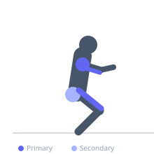
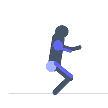

Exercise guide / Push Jerk
Push Jerk
The push jerk is a jerk variation in which the athlete catches the bar in a partial squat with both feet on the same line, as opposed to the split jerk's forward-and-back split stance. The dip-drive mechanics are identical to the split jerk but the catch requires the athlete to drop straight down rather than splitting. It is a useful accessory movement for overhead stability development and is often used as a teaching drill for the split jerk.
Primary muscles
rectus femoris
deltoid anterior
triceps long head
Secondary muscles
gluteus maximus
deltoid lateral
Stabilizers
infraspinatus
supraspinatus
transverse abdominis
Equipment
Standard Barbell
Weight Plates


Starting position
- Bar in front rack position on shoulders. Feet hip-width apart, torso vertical.
Setup
- Same starting position as the split jerk. Taken from a clean or the rack.
Steps
- Step 1: Stand with the bar in the front rack, torso upright.
- Step 2: Dip straight down — small controlled knee bend with vertical torso.
- Step 3: Drive upward explosively, pressing the bar off the shoulders.
- Step 4: Drop the hips straight down to catch the bar overhead in a partial squat, locking the elbows.
- Step 5: Stand to full extension while maintaining the locked overhead position.
Coaching cues
- Drive up — then drop straight down
- Lock out the elbows fast in the catch
- Dip straight — spine stays vertical
Breathing
- Brace before the dip. Exhale after standing from the catch.
Range of motion
- Full overhead lockout with elbows extended. Catch in a stable partial squat, feet flat.
Tempo
- Explosive drive, fast catch, controlled stand.
Common mistakes
- Pressing the bar with the arms before full hip extension
- Letting the torso lean forward during the dip
- Catching with bent elbows
Safety
- Requires shoulder mobility to achieve a stable overhead position with the bar slightly behind the ears.
- Use bumper plates.
Training
- strength: 1–5 reps
- power: 1–5 reps
- strength: 3–6 sets
- power: 3–6 sets
- Rest: {'strength': 180, 'power': 180}